5. Classification with Deep Learning (CNNs)
Convolution, pooling, batch normalization, dropout, regularization, optimizers, evaluation metrics
1. Limitations of Fully Connected Networks for Images
Before CNNs, neural networks used fully connected layers where every input pixel connects to every neuron. This creates serious problems for image data:
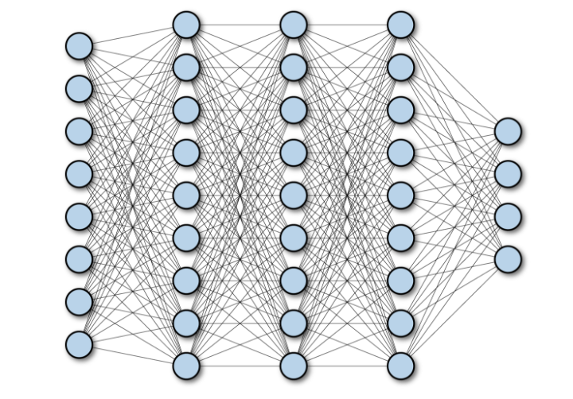
| Problem | Explanation |
|---|---|
| Spatial structure ignored | FCNs flatten images to 1D, destroying 2D spatial relationships (edges, local patterns) crucial for vision. |
| Enormous parameter count | A 256×256 RGB image with a single 1000-neuron FC layer requires ~197 million weights. Impractical. |
| No translation invariance | A shifted object activates entirely different neurons; the network must re-learn every pattern at every location. |
| Poor generalization | All-to-all connections overfit easily and generalize poorly to unseen images. |
2. CNN Innovations: Local Connectivity and Weight Sharing
Innovation 1: Local Connectivity
Instead of connecting each neuron to all inputs, each CNN neuron connects only to a small local region called its receptive field (e.g., 3×3 pixels). This mirrors how the visual cortex works: neurons respond to local regions of the visual field.
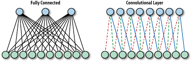
Innovation 2: Weight Sharing
The same filter weights are applied at every spatial position. A 3×3 filter has only 9 learnable weights regardless of image size. This is the core insight that makes CNNs parameter-efficient.
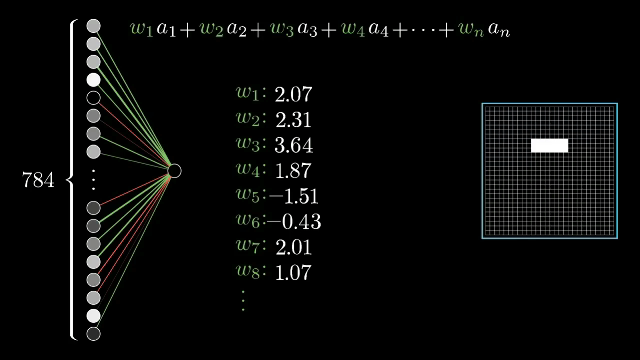
Parameter Count Comparison
| Layer Type | Example Configuration | Parameters |
|---|---|---|
| Fully connected | 32×32×3 input, 16 neurons | $32 \times 32 \times 3 \times 16 = 49{,}152$ |
| Convolutional | 16 filters of 3×3×3 | $16 \times (3 \times 3 \times 3 + 1) = 448$ |
3. The Convolution Operation
2D Discrete Convolution
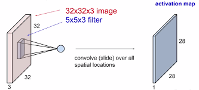
Worked Example (5×5 image, 3×3 kernel)
Image (top-left 3×3 subregion): $\begin{bmatrix}1 & 1 & 1 \\ 0 & 1 & 1 \\ 0 & 0 & 1\end{bmatrix}$, Kernel: $\begin{bmatrix}1 & 0 & 1 \\ 0 & 1 & 0 \\ 1 & 0 & 1\end{bmatrix}$
Element-wise multiply and sum:
$1\cdot1 + 1\cdot0 + 1\cdot1 + 0\cdot0 + 1\cdot1 + 1\cdot0 + 0\cdot1 + 0\cdot0 + 1\cdot1 = 4$
Output dimensions for a 5×5 input with 3×3 kernel (stride 1, no padding): $(5-3+1)\times(5-3+1) = 3\times3$.
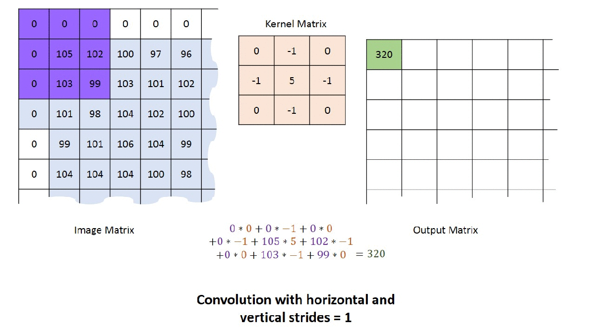
After Convolution: Activation Function
The convolution output is passed through a non-linear activation function (typically ReLU):
$$\text{FeatureMap}(i,j) = \text{ReLU}\!\Big(\sum_{m}\sum_{n} \text{Input}(i+m, j+n) \cdot w(m,n) + b\Big)$$This is directly analogous to classical image filtering (Sobel, Gaussian), except the filter weights are learned from data rather than hand-designed.
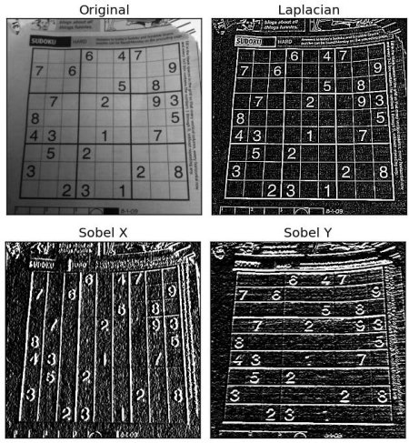
4. 3D Convolutions and Feature Maps
Why 3D?
Real images have multiple channels (RGB = 3 channels). Each CNN layer also produces multiple output channels (feature maps). Convolution is therefore inherently 3D.
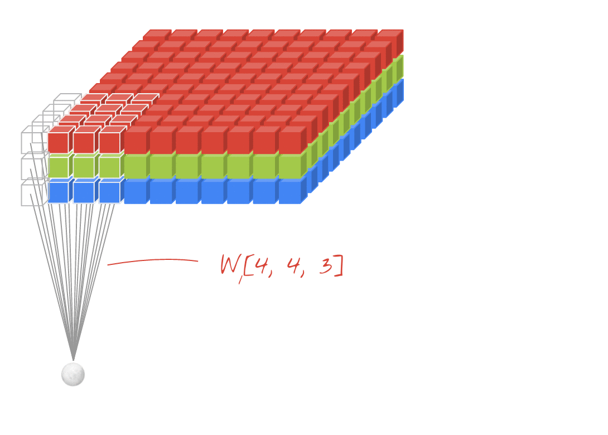
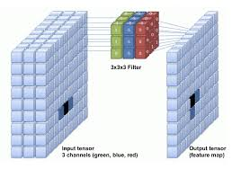
Dimensions and Parameter Count
| Example Values | Formula | |
|---|---|---|
| Input volume | $H \times W \times d_{\text{in}}$ | Given |
| Each filter shape | $k_h \times k_w \times d_{\text{in}}$ | Depth must equal $d_{\text{in}}$ |
| Output volume | $H' \times W' \times N$ | $N$ = number of filters |
| Parameters per filter | $k_h \times k_w \times d_{\text{in}} + 1$ | Including bias |
| Total parameters | $N \times (k_h \times k_w \times d_{\text{in}} + 1)$ |
Parameters = $16 \times (3 \times 3 \times 3 + 1) = 16 \times 28 = 448$
Compare to FC layer: $32 \times 32 \times 3 \times 16 = 49{,}152$ weights — over 100 times more.
This dramatic reduction is why CNNs can be trained on modest hardware and generalize well.
5. Pooling Layers
After convolution extracts local features, pooling layers reduce spatial resolution while increasing the effective receptive field of later layers.
Why Pooling?
- Reduce spatial resolution: Decreases computation in subsequent layers.
- Increase receptive field: Later filters see larger regions, detecting higher-level patterns.
- Partial translation/scale invariance: Small input shifts do not change pooling output.
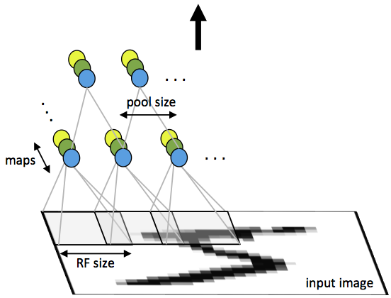
Max Pooling
The most common pooling operation: a window slides over each feature map and selects the maximum value at each position.
| Input (4×4) | Output (2×2) |
|---|---|
1 1 2 4 5 6 7 8 3 2 1 0 1 2 3 4 | 6 8 3 4 |
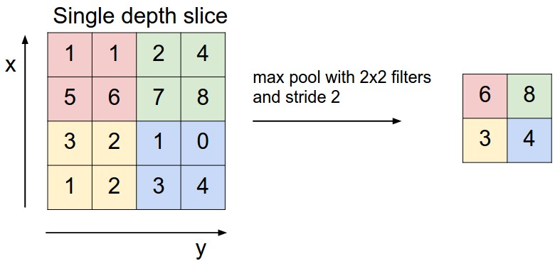
Average Pooling
$$\text{AvgPool}(i, j) = \frac{1}{p^2} \sum_{m=0}^{p-1} \sum_{n=0}^{p-1} \text{input}(i \cdot s + m, \; j \cdot s + n)$$| Property | Max Pooling | Average Pooling |
|---|---|---|
| What it preserves | Strongest activation (dominant feature) | Overall activation level |
| Effect | Sharpens feature responses | Smooths feature responses |
| Typical use | Classification CNNs (most common) | Final layers (e.g., Global Average Pooling) |
| Learnable parameters | None | None |
| Channel mixing | No (operates independently per channel) | No (operates independently per channel) |
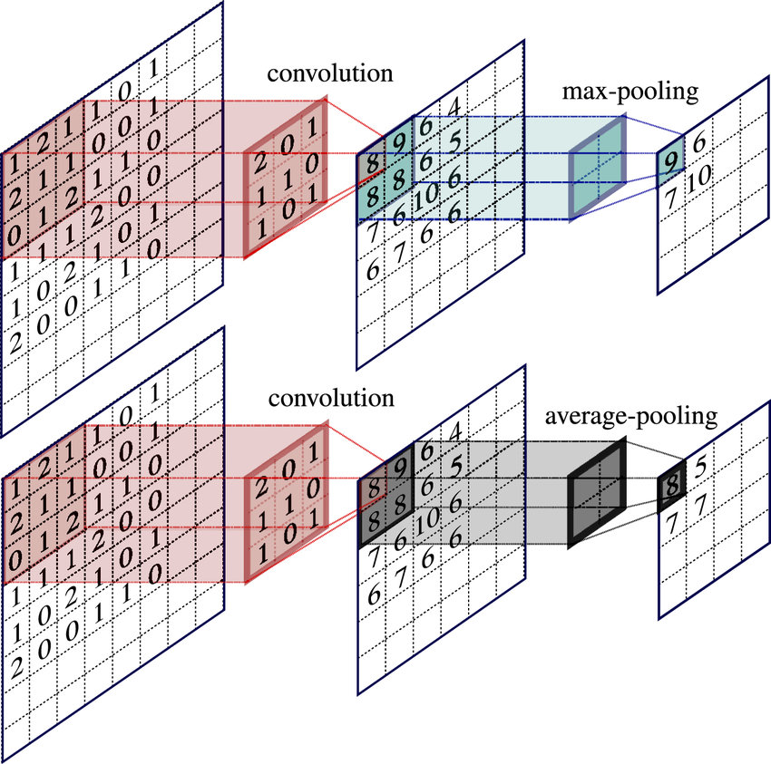
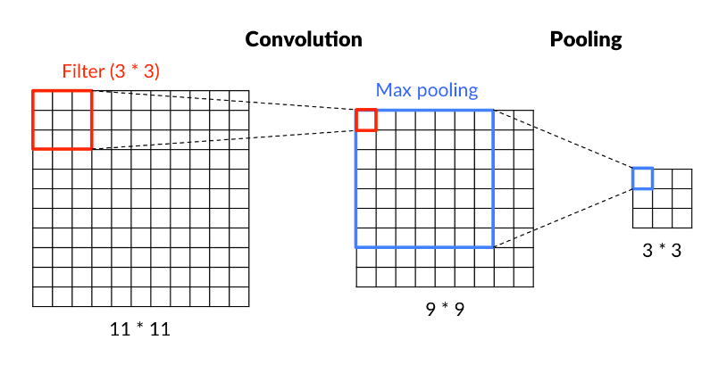
6. The Full CNN Pipeline
Standard Architecture Pattern
$$\text{Input} \rightarrow [\text{Conv} + \text{ReLU} \rightarrow \text{Pool}]_{\times k} \rightarrow \text{Flatten} \rightarrow [\text{FC} + \text{ReLU}]_{\times m} \rightarrow \text{Softmax} \rightarrow \text{Output}$$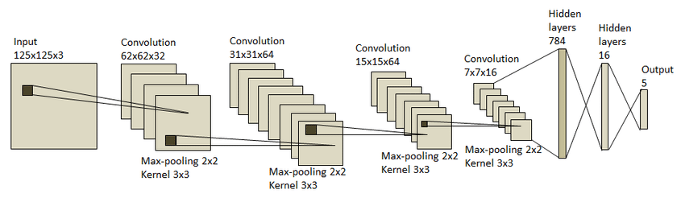
Role of Each Stage
| Stage | Function | What It Learns |
|---|---|---|
| Early conv layers | Low-level feature detection | Edges, lines, corners (like learned Sobel filters) |
| Middle conv layers | Mid-level feature detection | Textures, simple shapes, combinations of edges |
| Deep conv layers | High-level feature detection | Object parts, complex patterns (semantically meaningful) |
| Pooling layers | Spatial reduction, abstraction | Progressive summarization; larger receptive fields |
| FC layers | Combine all features for classification | Decision making |
| Softmax | Convert raw scores to probabilities | Calibrated probability distribution over classes |
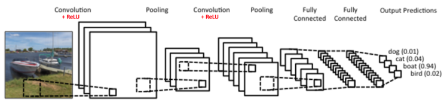
Example: 125×125×3 Input Network
| Stage | Output Dimensions |
|---|---|
| Input | $125 \times 125 \times 3$ |
| Conv1 + Pool1 | $62 \times 62 \times 32$ |
| Conv2 + Pool2 | $31 \times 31 \times 64$ |
| Conv3 + Pool3 | $15 \times 15 \times 64$ |
| Conv4 + Pool4 | $7 \times 7 \times 16$ |
| Flatten | $784 \times 1$ |
| FC1 | $16 \times 1$ |
| Output (Softmax) | $5 \times 1$ (5 classes) |
Key pattern: Spatial dimensions decrease while depth (number of channels) increases as you go deeper. This represents progressive transformation from raw pixels to abstract, high-level features.
7. 1×1 Convolution
As networks grow deeper, the number of feature maps (channels) grows rapidly. 1×1 convolutions are used to reduce or expand the number of channels without affecting spatial dimensions.
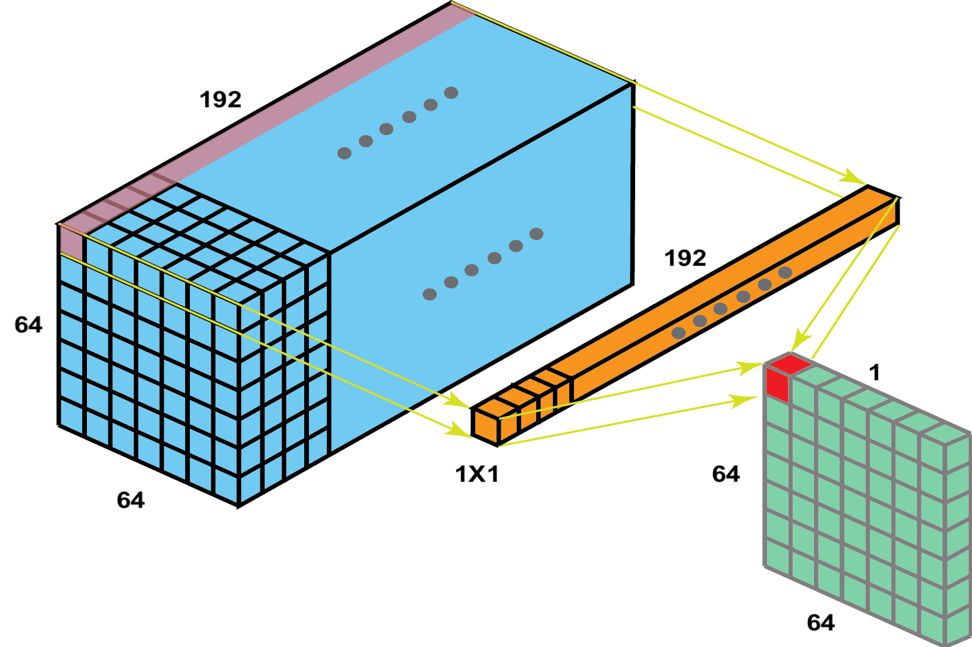
Input: $64 \times 64 \times 192$ (192 feature maps)
1×1 conv: 64 filters of size $1 \times 1 \times 192$
Output: $64 \times 64 \times 64$ (64 feature maps)
Parameters: $64 \times (1 \times 1 \times 192 + 1) = 64 \times 193 = 12{,}352$
Compare to 3×3 conv: $64 \times (3 \times 3 \times 192 + 1) = 110{,}656$ parameters — nearly 9 times more expensive.
1×1 convolutions are used extensively in GoogLeNet/Inception (channel bottleneck before 3×3 and 5×5 convs) and ResNet bottleneck blocks.
8. Stride, Padding, and Output Size
Stride
Stride is the step size the filter moves between positions.
- Stride = 1: Filter moves one pixel at a time. Largest output.
- Stride = 2: Filter moves two pixels at a time. Roughly halves output dimensions.
- Stride > 1 can replace pooling for downsampling.
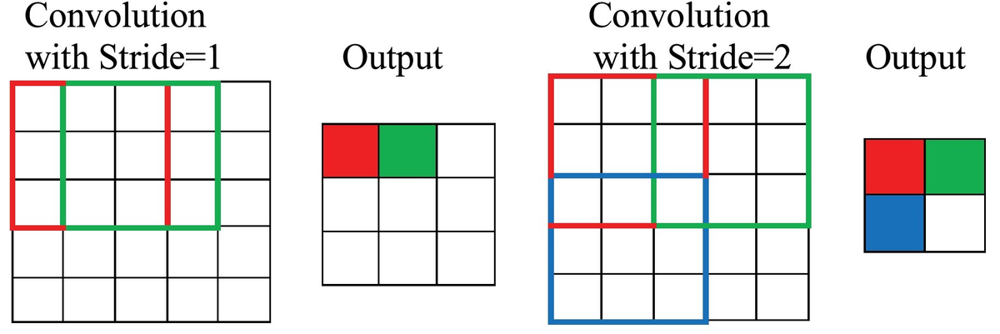
Padding
Padding adds extra pixels (typically zeros) around the input border before convolution.
| Type | Description | Output Size |
|---|---|---|
| Valid padding (no padding) | Filter only slides where it fully fits. Output smaller than input. | $(W - K + 1) \times (W - K + 1)$ |
| Same padding (zero padding) | Zeros added so output has same spatial dimensions as input. | $W \times W$ (same as input) |
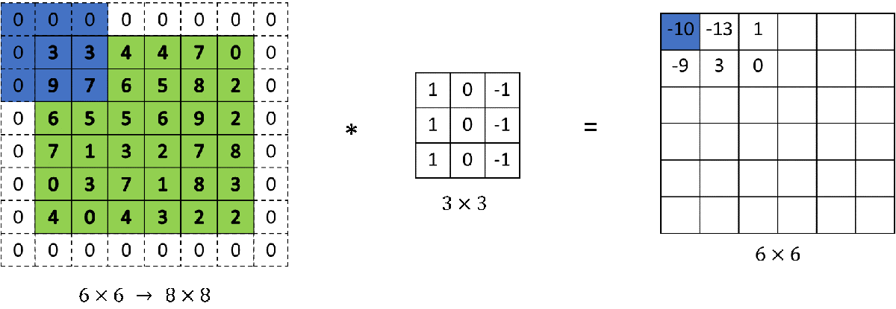
Output Size Formula
| $W$ | $K$ | $P$ | $S$ | $O$ | Note |
|---|---|---|---|---|---|
| 32 | 3 | 0 | 1 | 30 | Shrinks |
| 32 | 3 | 1 | 1 | 32 | Same size |
| 32 | 5 | 2 | 1 | 32 | Same size |
| 32 | 3 | 0 | 2 | 15 | Halved (approx.) |
| 224 | 7 | 3 | 2 | 112 | AlexNet first layer |
9. Overfitting and Regularization
The Bias-Variance Tradeoff
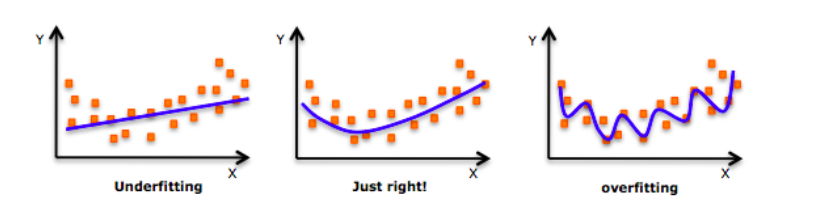
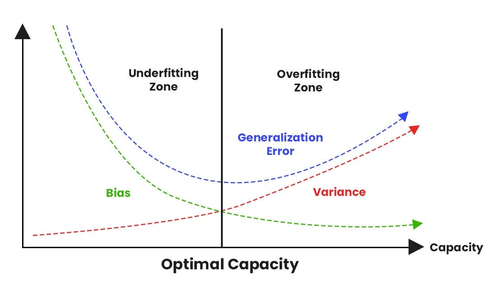
L1 and L2 Regularization
Regularization penalizes large weight values, encouraging simpler models that generalize better.
| Type | Penalty Term | Full Cost | Effect |
|---|---|---|---|
| L1 (Lasso) | $\sum |w_i|$ | $\mathcal{L}(\theta) + \lambda \sum |w_i|$ | Drives some weights to exactly zero; sparse model; feature selection |
| L2 (Ridge / Weight Decay) | $\sum w_i^2$ | $\mathcal{L}(\theta) + \lambda \sum w_i^2$ | Drives weights toward small values; smooth decision boundaries |
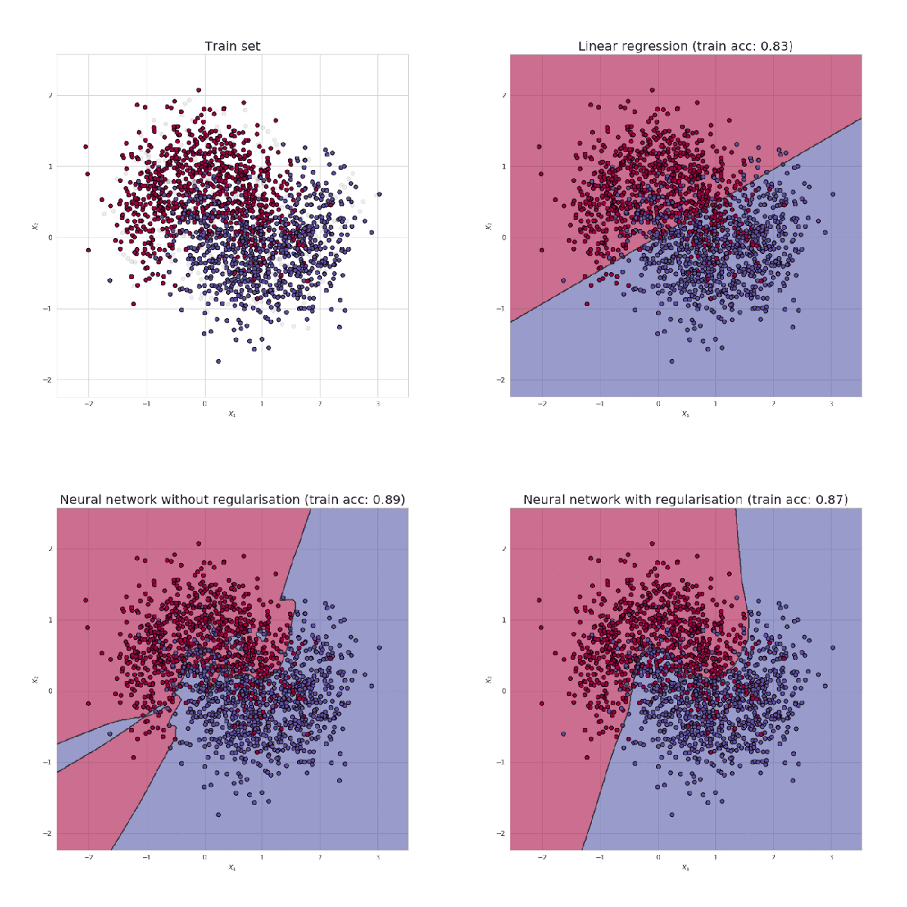
10. Dropout
Dropout randomly disables neurons during each training iteration with probability $p$ (typically $p = 0.5$).
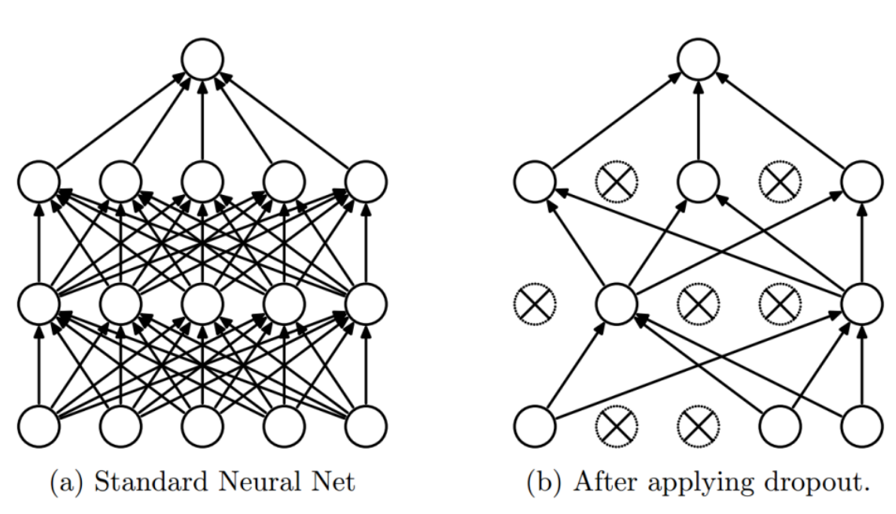
| Training | Inference | |
|---|---|---|
| Neurons | Each has probability $p$ of being set to zero | All neurons active |
| Weights | Only active neurons' weights are updated | Scaled by $(1-p)$ to compensate |
Why Dropout Works
- Ensemble approximation: Each dropout pattern creates a different sub-network; training on all patterns is like training an ensemble.
- Prevents co-adaptation: Neurons cannot rely on specific other neurons being present, forcing distributed, redundant representations.
- Noise injection: Acts as regularization by preventing exact memorization.
- Typically applied to fully connected layers, not convolutional layers.
- Common rates: $p = 0.5$ for hidden layers, $p = 0.2$ for input layers.
- Never apply dropout during inference.
11. Batch Normalization
The Problem: Internal Covariate Shift
During training, the distribution of each layer's inputs changes as parameters in preceding layers change. Each layer must continuously adapt to a shifting input distribution, slowing training. This is called internal covariate shift.
The Algorithm
- Compute batch mean: $\mu_{\mathcal{B}} = \frac{1}{m} \sum_{i=1}^{m} x_i$
- Compute batch variance: $\sigma_{\mathcal{B}}^2 = \frac{1}{m} \sum_{i=1}^{m} (x_i - \mu_{\mathcal{B}})^2$
- Normalize: $\hat{x}_i = \frac{x_i - \mu_{\mathcal{B}}}{\sqrt{\sigma_{\mathcal{B}}^2 + \epsilon}}$
- Scale and shift: $y_i = \gamma \hat{x}_i + \beta$
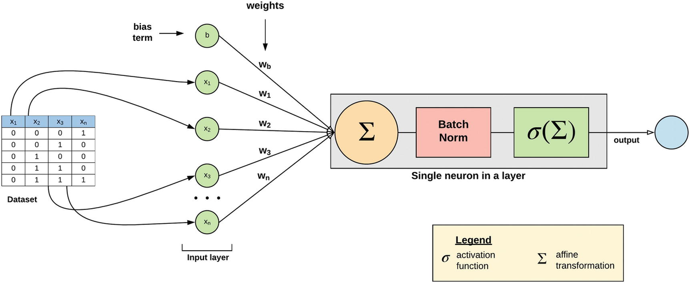
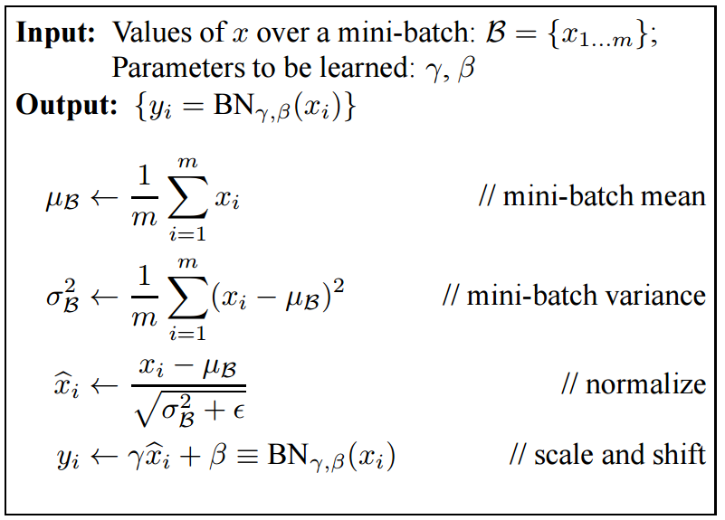
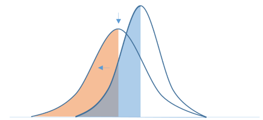
Benefits
| Benefit | Explanation |
|---|---|
| Faster convergence | Allows higher learning rates without instability |
| Reduced sensitivity to initialization | Normalized inputs are less sensitive to the starting weight values |
| Mild regularization | Mini-batch statistics introduce noise that acts like dropout |
| Gradient stability | Reduces vanishing/exploding gradient risk |
12. Weight Initialization and Transfer Learning
Initialization Schemes
| Scheme | Formula | Best For |
|---|---|---|
| Gaussian (random) | $w \sim \mathcal{N}(0, \sigma^2)$ fixed $\sigma$ | Simple baseline; often suboptimal |
| Xavier / Glorot | $w \sim \mathcal{N}\!\left(0, \frac{2}{n_{\text{in}} + n_{\text{out}}}\right)$ | Sigmoid / Tanh activations |
| MSRA / He | $w \sim \mathcal{N}\!\left(0, \frac{2}{n_{\text{in}}}\right)$ | ReLU activations |
| Pretrained weights | Load from model trained on large dataset | Always preferred when available |
Transfer Learning
Use a model pretrained on a large dataset (e.g., ImageNet, 1.2M images) as the starting point for a new task.
- Take a pretrained network (e.g., ResNet on ImageNet).
- Freeze early layers — they already learn generic features (edges, textures, colors).
- Replace and retrain the final FC layers for your specific task (different number of output classes).
- Optionally fine-tune some later convolutional layers with a very small learning rate.
13. Gradient Descent Variants and Optimizers
Variants of Gradient Descent
| Variant | Gradient computed over | Speed | Stability |
|---|---|---|---|
| Batch GD | Entire dataset | Slow | Very stable |
| Stochastic GD (SGD) | Single sample | Fast per update | Oscillating |
| Mini-batch GD | Batch of $n$ samples | Good balance | Good balance |
Mini-batch GD is the standard in practice. Typical batch sizes: 32, 64, 128 images.
Momentum
Standard GD oscillates in narrow valleys or gets stuck in local minima. Momentum accumulates velocity from previous updates:
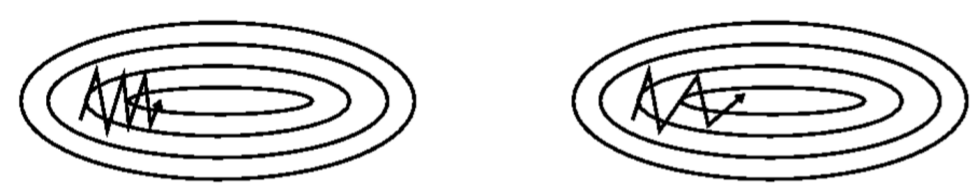
Advanced Optimizers
| Optimizer | Key Idea |
|---|---|
| NAG (Nesterov) | "Look-ahead" momentum: computes gradient at anticipated future position |
| AdaGrad | Adapts learning rate per parameter; decreasing rate based on sum of past squared gradients |
| RMSprop | Like AdaGrad but uses exponential moving average of squared gradients (fixes diminishing rate) |
| Adam | Combines momentum (first moment) + RMSprop (second moment). Most popular in practice. |
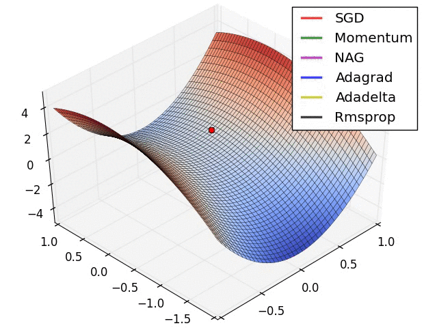
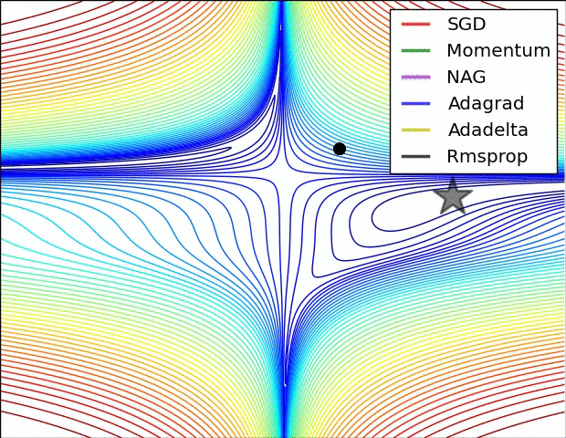
- Learning rate: Start low ($10^{-3}$ to $10^{-8}$). Reduce after thousands of iterations. Too high = oscillating loss. Too low = slow decrease.
- Weight initialization: Always prefer pretrained weights. Use Xavier for sigmoid/tanh, MSRA/He for ReLU.
- Monitor both training and validation loss to detect overfitting early.
- Use pretrained models at least for earlier layers — they extract generic features useful for any visual task.
- CNNs can be difficult to train. If stuck, reduce the learning rate or check data preprocessing.
14. What Does a CNN See? Feature Map Visualization
Visualizing CNN feature maps reveals the hierarchical nature of learned representations:
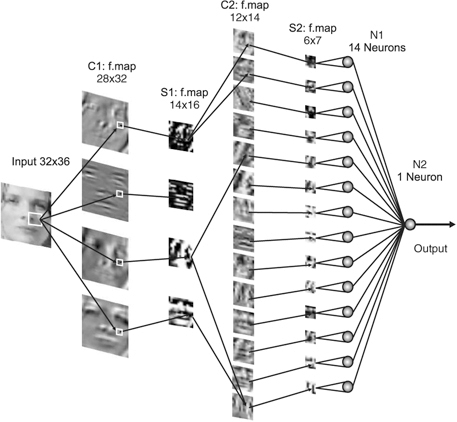
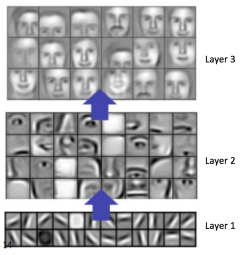
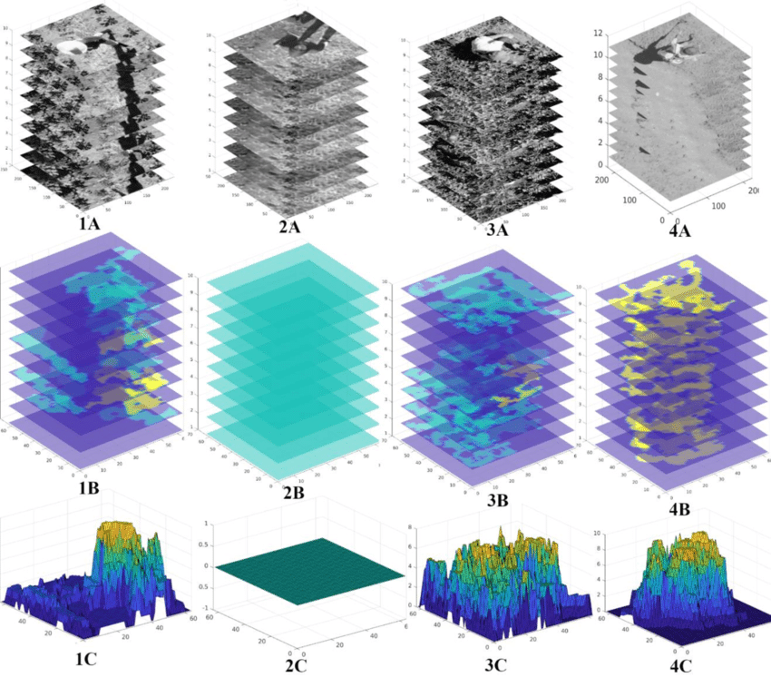
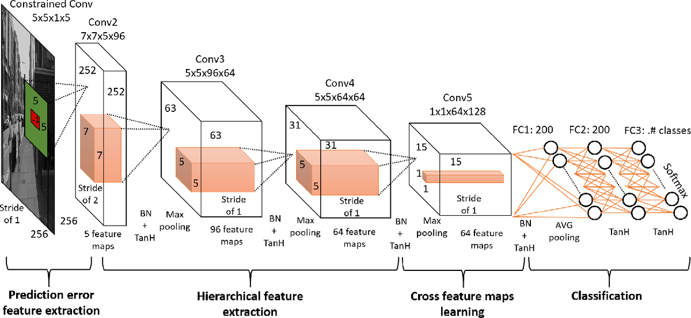
15. Classification Metrics
Confusion Matrix
| Predicted: Yes | Predicted: No | |
|---|---|---|
| Actual: Yes | TP (True Positive) | FN (False Negative) |
| Actual: No | FP (False Positive) | TN (True Negative) |
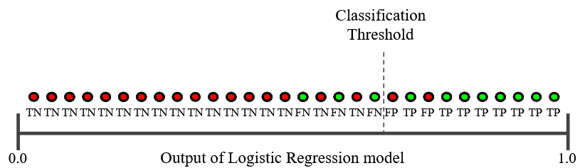
Core Metrics
The Problem with Accuracy
Accuracy is misleading for imbalanced datasets. Example: 9,990 Class 0 samples, 10 Class 1 samples. A model predicting everything as Class 0 achieves 99.9% accuracy while completely failing to detect any Class 1 samples.
Precision-Recall Tradeoff
| Threshold direction | Precision | Recall |
|---|---|---|
| Raise threshold (more selective) | Increases (fewer FP) | Decreases (more FN) |
| Lower threshold (more inclusive) | Decreases (more FP) | Increases (fewer FN) |
PR Curve and ROC Curve
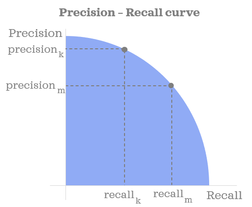
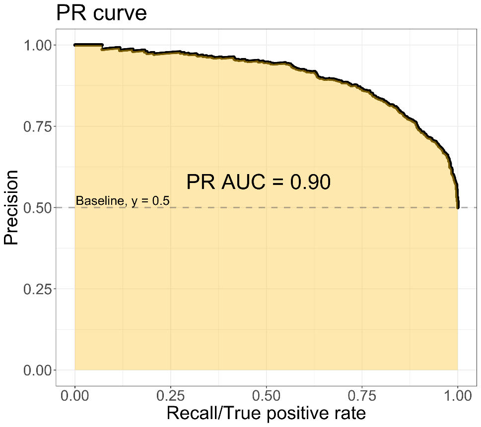
- Perfect classifier: top-left corner (TPR=1, FPR=0)
- Random classifier: diagonal line (ROC-AUC = 0.5)
- Any curve above the diagonal is better than random
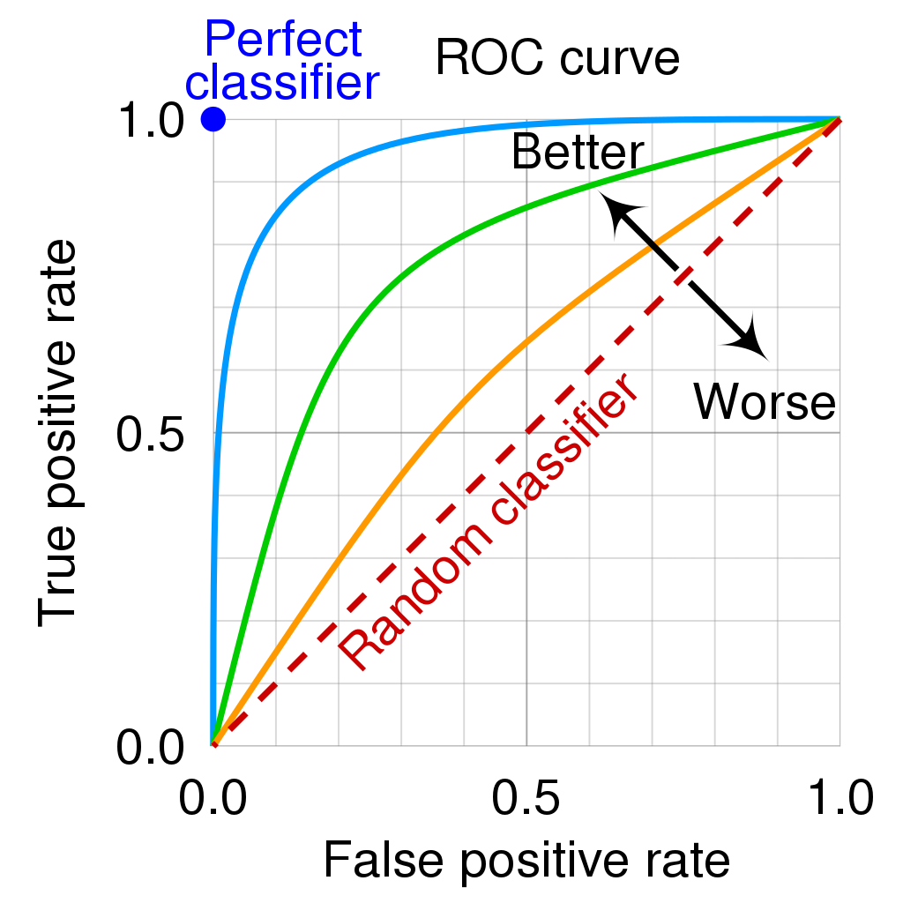
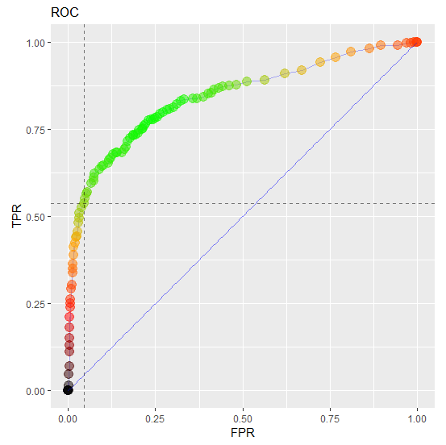
| Metric | ROC Curve | PR Curve |
|---|---|---|
| Best for | Balanced datasets | Imbalanced datasets |
| Random baseline | Diagonal (AUC = 0.5) | Depends on class ratio |
| Sensitive to imbalance? | Less sensitive | More sensitive (more informative) |
| Emphasizes | Overall discrimination | Performance on positive (minority) class |
Application-Driven Metric Selection
| Application | Priority Metric | Threshold Setting | Reason |
|---|---|---|---|
| Tumor detection (medical) | High Recall | Low (more inclusive) | Missing a tumor is life-threatening |
| Spam detection (email) | High Precision | High (more selective) | Misclassifying important email is costly |
| Balanced application | F1 Score | 0.5 (default) | Equal weight to precision and recall |
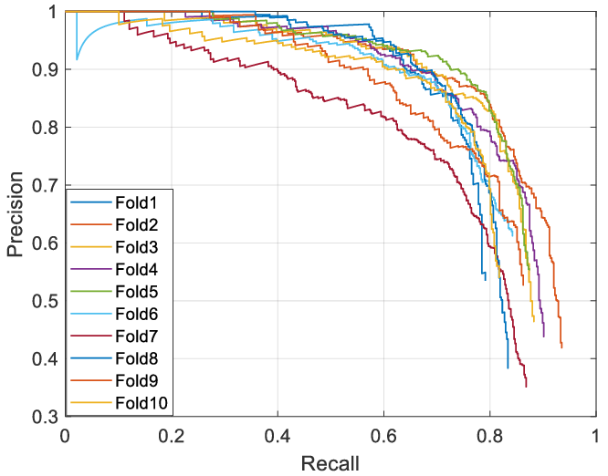